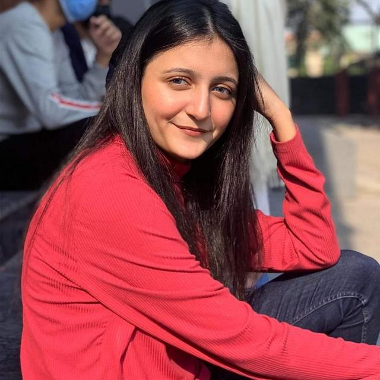
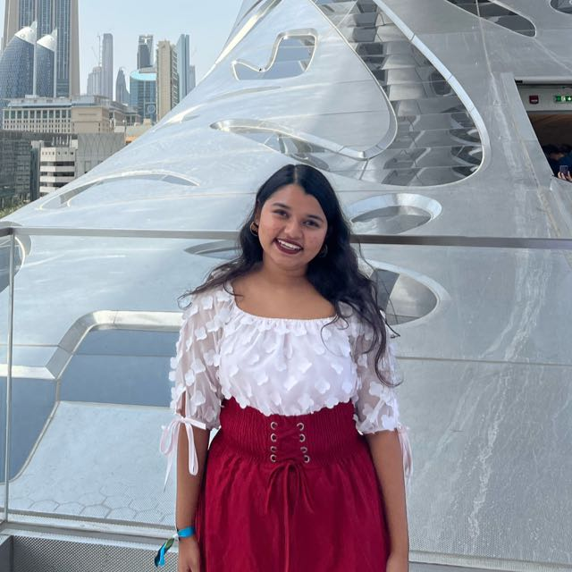

a . serious . interview
The Film
Interviewing the minority population on campus
As a hub for active members of the community, the NYUAD campus life is vital for all of us. Thus, there should be a channel open freely and facilitated constructively for sharing the campus life experiences. However, we found that this channel is usually closed for an important minority population on campus - cats. This film is, therefore, made to echo their unique perspectives.
Cast
No human was hurt during shooting
Special thanks to those did't scratched us
Directors
Communications Lab @ NYUAD

Yiyang Xu

Ramsha Bilal

Raya Tabassum